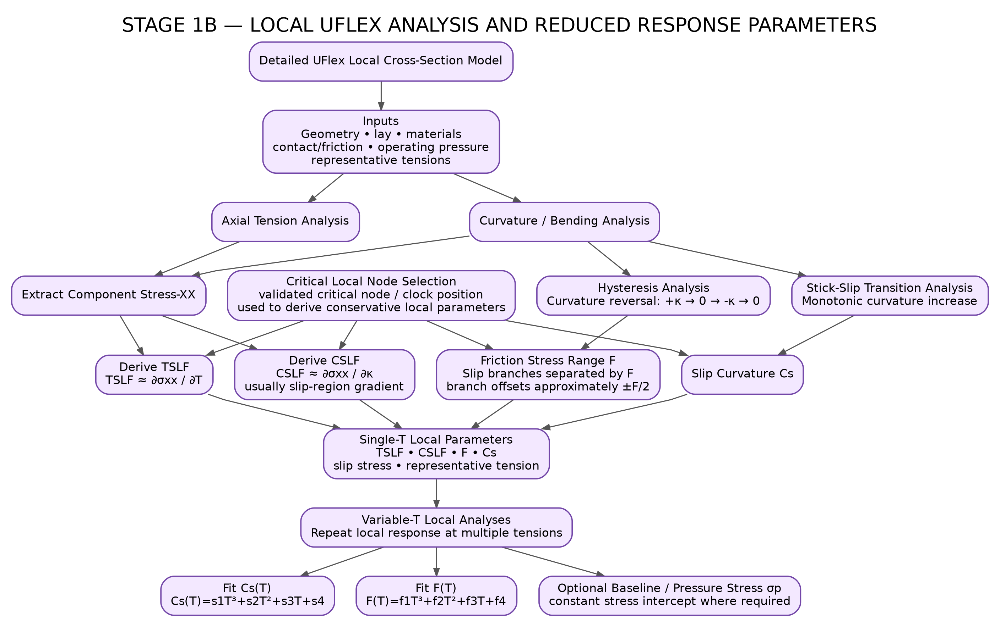

This page follows the Stage 1B map: detailed UFlex cross-section model → axial tension and curvature/bending analyses → critical local node selection → TSLF, CSLF, friction range F and slip curvature Cs → single-T parameters → variable-T fits.
Click any node to inspect its exact role in the Stage 1B source map.
Stage 1B entry.
Geometry • lay • materials • contact/friction • operating pressure • representative tensions
Local response under axial tension.
Local response under curvature / bending.
Component longitudinal stress used by the reduced-parameter derivation.
Validated critical node / clock position used to derive conservative local parameters.
Curvature reversal: +κ → 0 → −κ → 0
Monotonic curvature increase.
TSLF ≈ ∂σxx / ∂T
CSLF ≈ ∂σxx / ∂κ
Usually slip-region gradientSlip branches separated by F; branch offsets approximately ±F/2.
Reduced stick-slip transition parameter.
TSLF • CSLF • F • Cs • slip stress • representative tension
Repeat local response at multiple tensions.
Cs(T)=s1T³+s2T²+s3T+s4
F(T)=f1T³+f2T²+f3T+f4
Constant stress intercept where required.
This page is the interactive version of Stage 1B.
